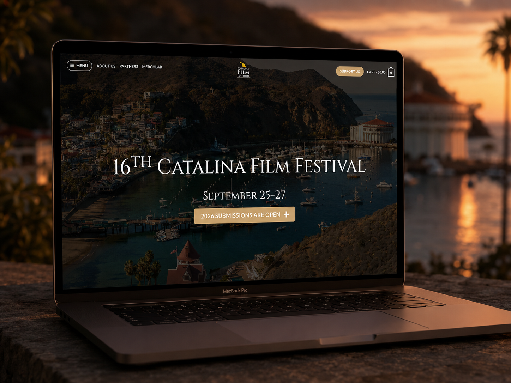
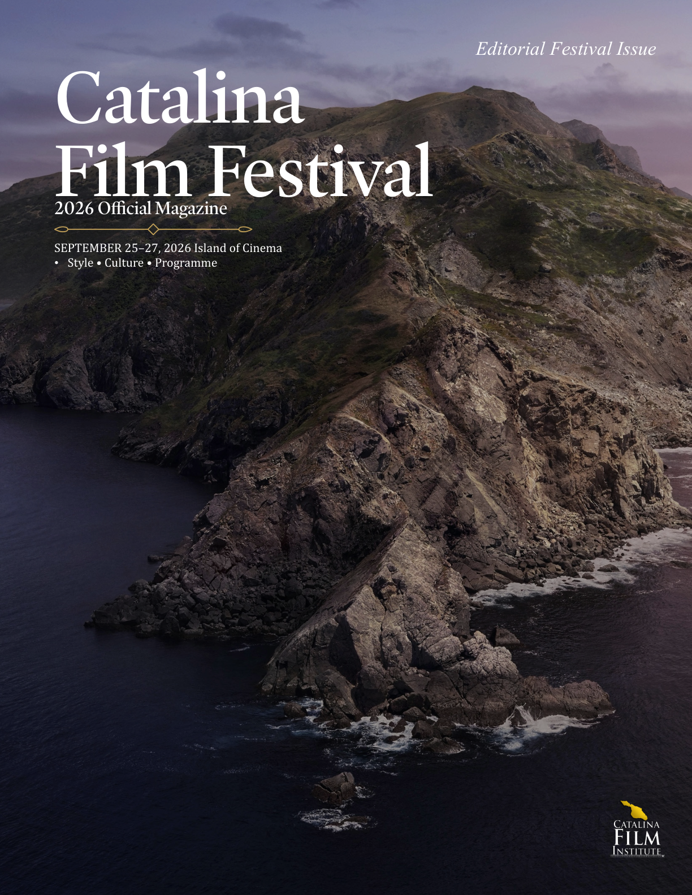
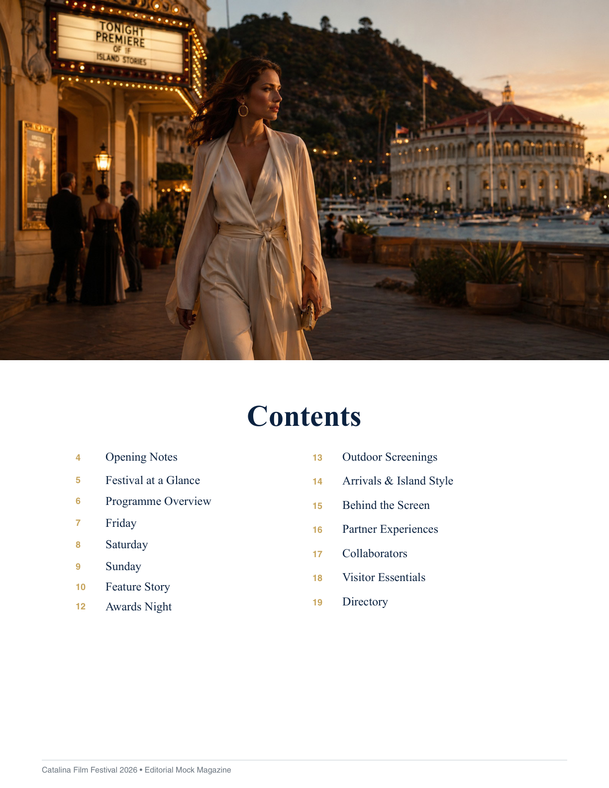
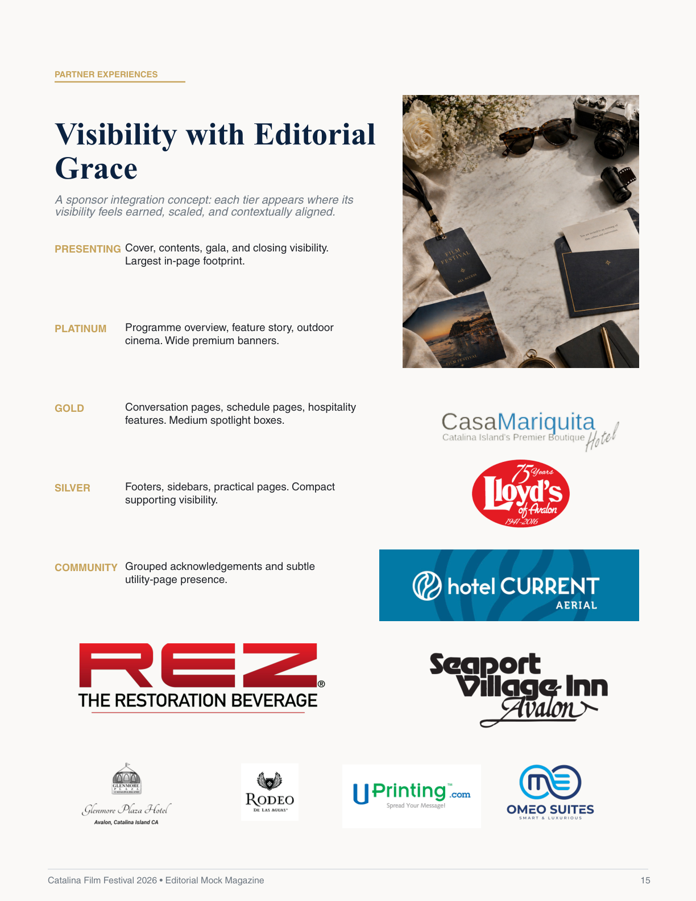
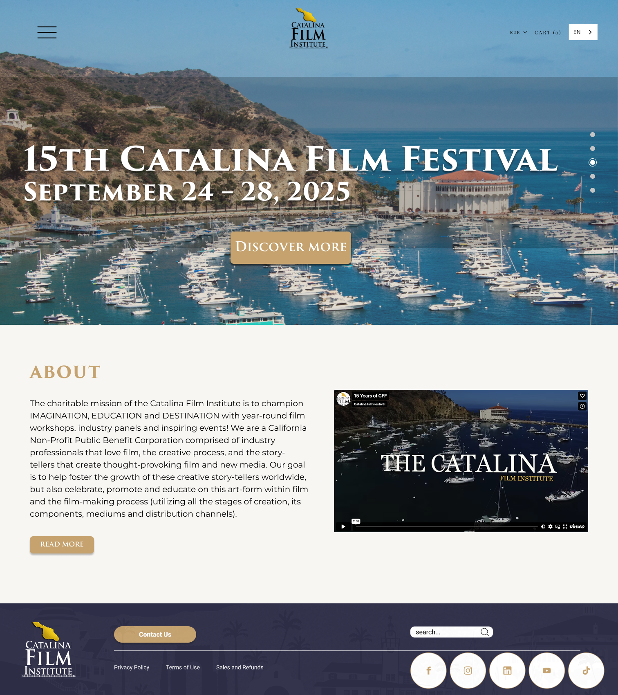
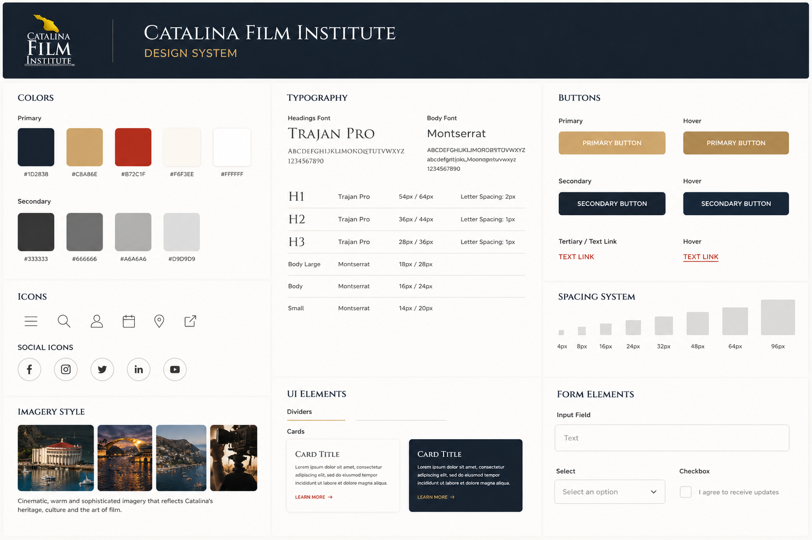
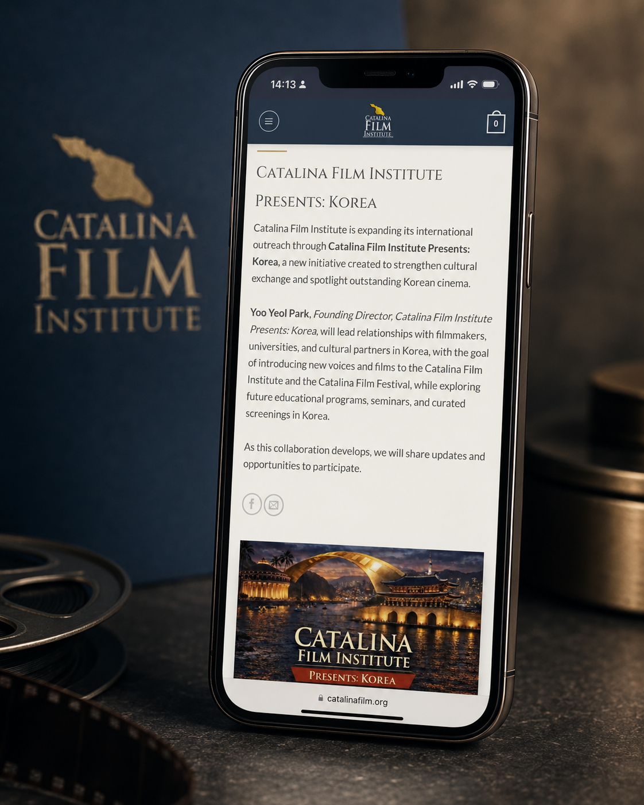

Case study / Catalina Film Institute
Rebuilding a cinematic digital presence to recover momentum.
Catalina needed a website direction that could feel premium, clarify the festival journey and support a commercial recovery after the disruption of the COVID period.
The project connected the Institute’s cinematic identity with a cleaner content system, stronger calls to action and a more confident visual language across desktop and mobile.

Verified results
August returned to 2019 level performance.
The August web report showed that the recent work on the site was helping Catalina return to peak performance: traffic reached the strongest level since 2019, with the month still not finished.
Geography
North America represented around 93% of visitors, followed by Europe at 5.5% and Asia at 1.6%.
Devices and browsers
Desktop remained dominant, while Chrome led browser usage at roughly 54%, followed by Mobile Safari at about 22%.
Acquisition
Search was the major driver, with Google generating 542 referrals and Facebook plus Instagram adding further reach.
Current build
A new version is being written completely in code.
Beyond visual direction and no code iteration, the Catalina project is moving into a custom coded website build. This makes the work stronger technically: cleaner structure, more control over performance, fewer platform constraints and a clearer foundation for future festival operations.

Editorial magazine
A published editorial object for programme, style and partner visibility.
The magazine extends the website direction into a premium editorial format: full bleed imagery, restrained copy, sponsor hierarchy and a luxury island weekend rhythm.


Problem
The festival needed more than a beautiful homepage.
The old experience had to support several audiences at once: festival visitors, filmmakers, donors, partners and merchandise buyers. The challenge was to make Catalina feel cinematic while keeping the system practical and easy to navigate.
The priority was commercial as well as aesthetic: rebuild confidence, make the offer clearer and help the festival return to stronger pre COVID levels of performance.


Design system
A visual language based on cinema, heritage and restraint.
The system uses deep navy, warm gold, ivory and restrained neutrals to create a premium cinematic tone. Trajan Pro gives the brand a film institution quality, while Montserrat keeps longer content readable and practical.
The design system defines buttons, typography, form elements, cards, spacing and imagery rules so the site can remain elegant without becoming inconsistent as it grows.
Process
From atmosphere to action.
The design moved from cinematic impression to practical conversion: users needed to understand the festival, find the right pathway and act without unnecessary friction.
Editorial identity
A richer cinematic language was introduced through Avalon imagery, dark overlays, refined type and warm gold accents.
User pathways
The experience was structured around the routes that matter: discover the festival, submit, support, shop, learn and contact.
Responsive experience
Mobile layouts were treated as a core experience, not a reduced version of desktop.
Commercial focus
Calls to action around support, cart, submissions and discovery were made more visible and easier to follow.
Mobile
A premium experience had to work in the hand.
The mobile design keeps the Institute’s cinematic tone while prioritising reading clarity, simpler controls and stronger vertical rhythm.
This matters because festival discovery, sharing and return visits often happen on mobile before a user commits to a larger action.

Conclusion
The site became a recovery tool, not just a brand surface.
The Catalina work shows how design, computing and commercial strategy can support one another. A stronger visual identity made the festival feel more premium; clearer journeys made action easier; and the improved experience helped bring numbers and sales back toward pre COVID strength.
The result is a more confident digital presence: cinematic enough for a film institution, practical enough for a working festival.
Next project
Asia for Animals
Donation focused UX and design system for a global animal advocacy coalition.